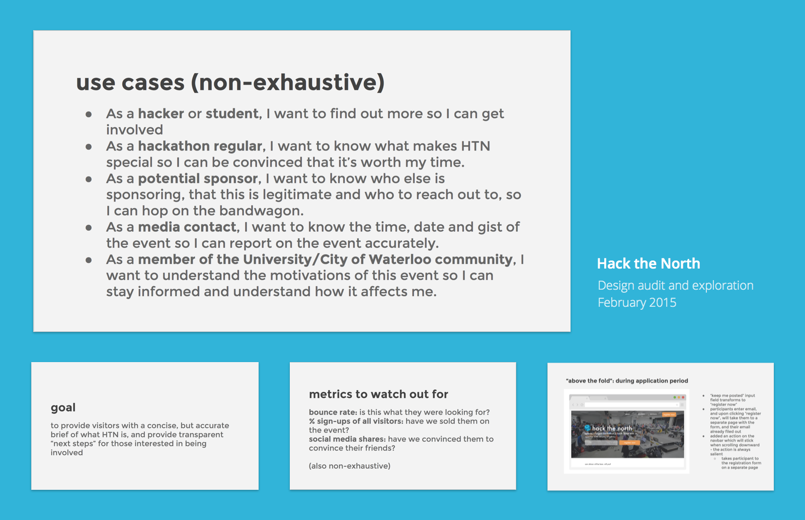
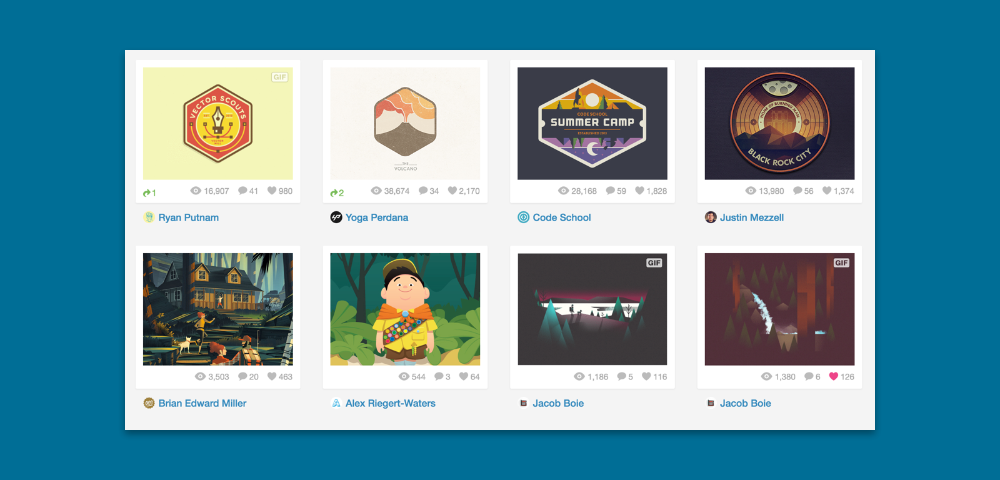
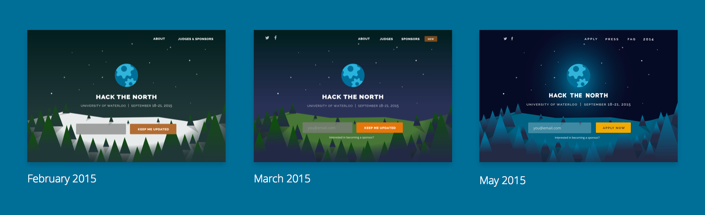
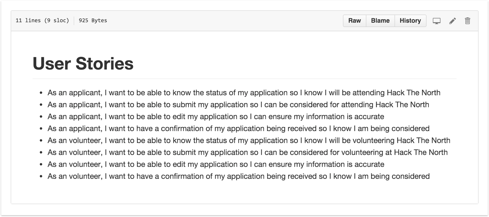
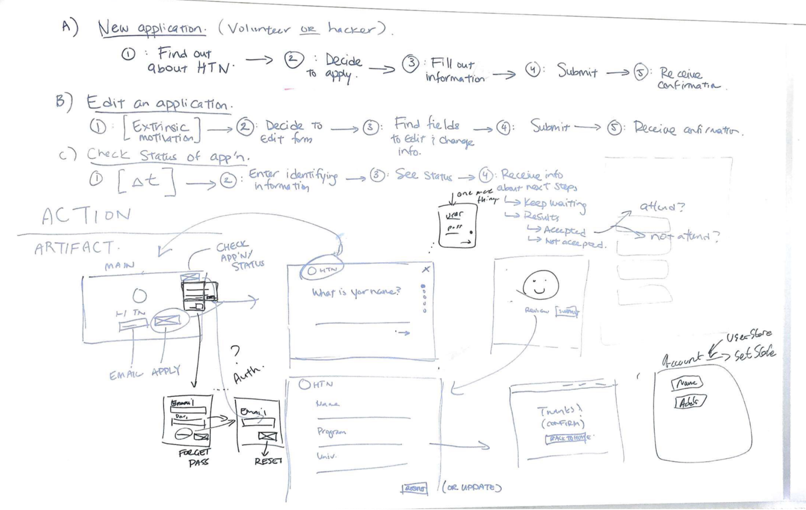
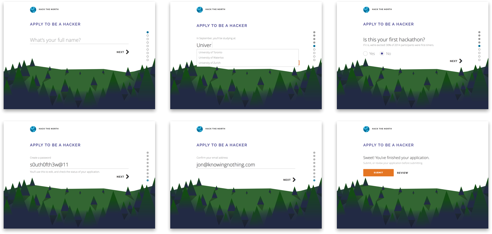

Hack the North
Providing hackers with the resources to be successful

Role
I worked as Hack the North's primary user experience designer for most of 2015. I championed the design of the hackathon's website, and iOS application, and also dug into the front-end codebase to implement style changes.
Design Audit
In its second year, and as a part of onboarding myself onto the Hack the North team, I decided to perform an audit of all of the hackathon's existing design assets. I shared the design audit with the team in order to align on high-level goals and overall design direction before I got started on any specific tasks.

The audit was overarching and comprehensive, and included exploratory wireframes and concepts.
Rebranding
As part of the design audit, I proposed the idea of branding the hackathon with a unique theme. It evolved with time, but eventually it came to encompass the previous brand colours so it could be recognizable, and also brought an outdoors-y analogy to the typical hackathon.

Inspiration from Dribbble that influenced the illustration and concept of the redesign.
I was inspired by the boy scouts badges, and the way that hackers adorned hackathon stickers on their laptops the same way a boy scout would–as tokens of accomplishments. I collected some outdoors-y illustrations and badges as inspiration for the concept.

The evolution of our brand in the hero of our webpage.
Application process
Goal
We needed to provide a robust way for eager hackers to apply for the hackathon and check the status of their application. It was projected that over 5,000 hackers were to apply, while there were only 1,000 spots to be offered. It was definitely a requirement that we be transparent and cogent about the entire process.
User stories
We had conversations with hackers and hackathon volunteers–both new ones and old, and they gave us some insight as to how they saw the process of applying to hackathons. From that we devised a set of user stories that we could reference in order to ensure that the end product would meet their needs.

We gathered up what we knew about hackathon applicants and collaborated together on these user stories on Github.
Action-artifact mapping

The whiteboard that we all referenced as we worked away on the website.
Using our user stories, I led this exercise with the development team one afternoon, so we could all understand what needed to be built, and we all understood the reasons we were building what we were building. We summarized our findings in a map of all the different paths someone might take, so we could make sure that we were comprehensive in our design.
Hacker applications
Inspired by how digestible, and mobile-friendly broken down forms were, we decided to break down the experience question-by-question, while still providing navigation to quickly switch between questions.

Different types of questions from the application process.
We chose this kind of flow because it made a normally intimidating process feel bite-sized and manageable. It also worked really well on mobile, which isn't super conducive to long forms.
Next time
Crunched for time and resources, I focused almost exclusively on the actual application form since it was what was essential. I think we definitely could have done a better job being more transparent with applicants as to their status in the application process and what their next steps with us were.